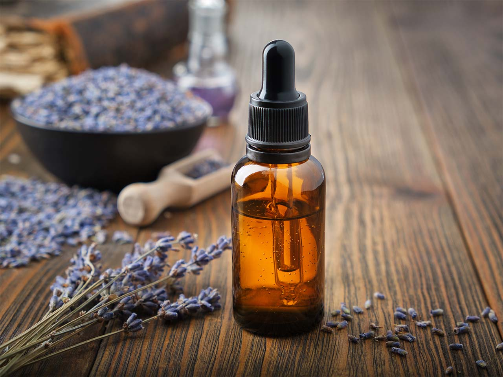
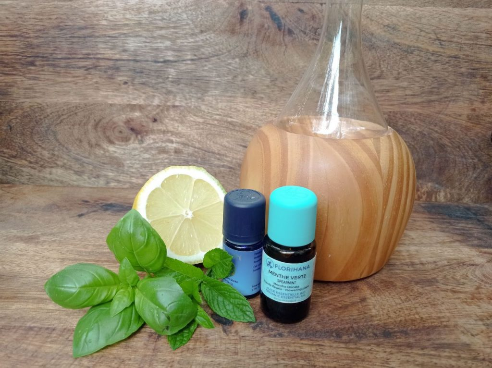
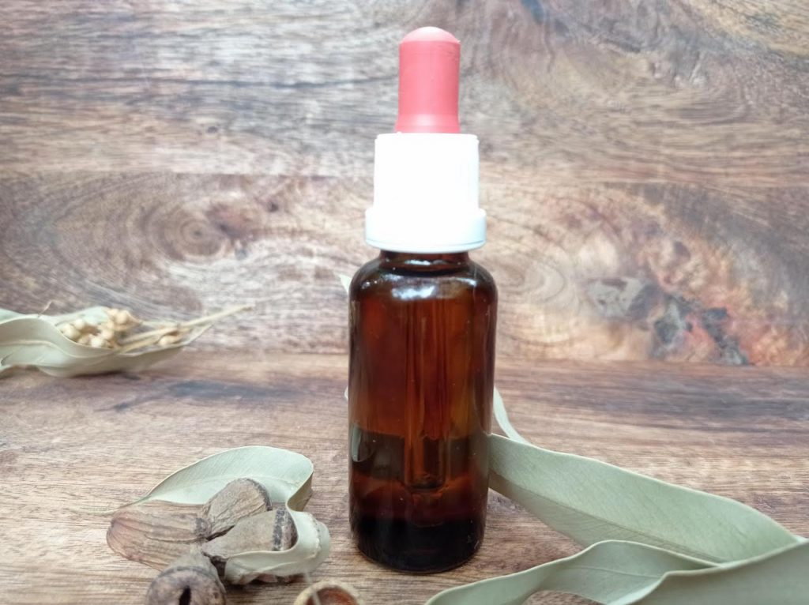
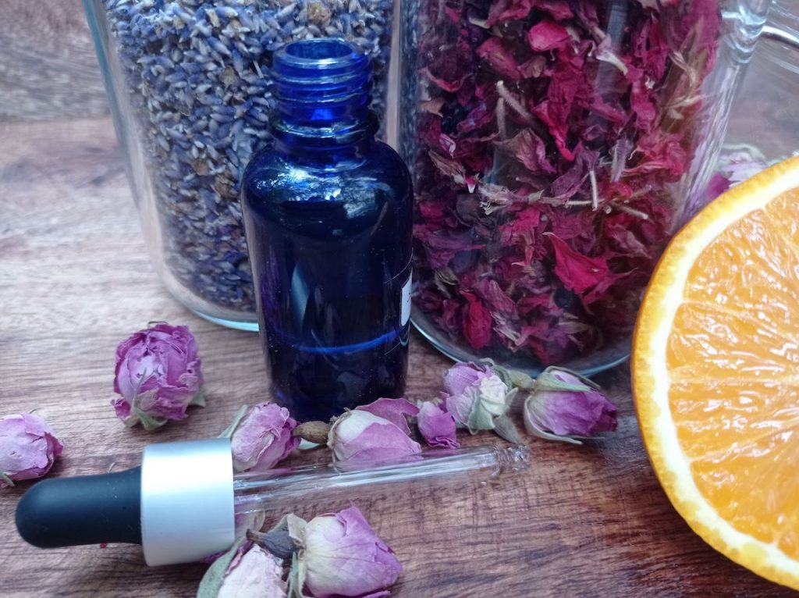
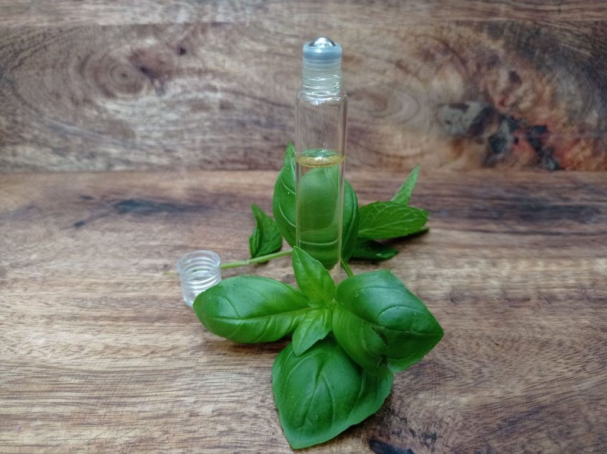

Vůně působí na naši náladu, vyvolávají vzpomínky, podporují tvořivost a napomáhají soustředění. Vůně nás doprovází celý život. Jsou našimi neviditelnými pomocníky. Poradím vám, jak si je správně vybrat a používat.

Aromaterapie
Aromaterapie je svět vůní s léčivými účinky. K aromaterapii používáme éterické oleje, které se buď používají samostatně nebo ve směsích, anebo jsou součástí aromaterapeutických přípravků. Aromaterapie se používá v péči o zdraví, kterou si můžeme dopřát ve formě aromamasáže, ale patří sem i obyčejné provonění prostoru pomocí aromalampy.
Aromaterapie se používá ve wellness a saunových světech, kde přispívá k dokonalému zážitku. Do voňavého světa zařazujeme i umění přírodních parfémů. Aromaterapie může být součástí psychoterapie, nebo jógových lekcí, či jiných terapeutických sezení.
Aromaterapie má v různých zemích různé postavení. Například ve Francii a ve Velké Británii má delší tradici a setkáte se s ní v menší míře i ve zdravotnictví. V České republice se využívá především jako prevence a doplněk k léčbě méně závažných onemocnění. Je to dané legislativou.
Aromaterapeutické služby poskytují aromaterapeuti, kteří mají vzdělání v tomto oboru.
Provonění prostoru - éterické oleje a jejich směsi
V aromaterapii používáme éterické oleje, které se získávají z aromatických rostlin. Éterické oleje mají blahodárné účinky na lidskou psychiku i na naše fyzické zdraví. Nejjednodušší použití éterických olejů je provonění prostoru pomocí aromalampy nebo difuzéru, do kterých nakapeme éterické oleje podle jejich vlastností a návodu k danému zařízení. Můžeme využít následující účinky éterických olejů nebo jejich směsí:
Antibakteriální účinky - pročištění vzduchu v období výskytu onemocnění dýchacích cest
Zlepšení koncentrace - při učení pro studenty nebo v kanceláří
Antistresová vůně - pomohou vám vyspořádat se se stresem
Uklidňující směsi - pomáhají k usínání a dobrému spánku
Chcete pomoct s výběrem éterických olejů a vytvořením vhodné směsi? Navštivte lékárnu Inep, kde vám rádi poradíme, nebo si u mě ojednejte individuální konzultaci, kde vše detailně probereme.


SOS aromaterapie na doma i na cesty do kabelky - aroma roll-on
Aroma roll-ony se hodí jako pomocníci na obnovování psychické rovnováhy, první pomoc při bolesti hlavy, ošetření akné nebo na úlevu od štípanců.
Jak se používají: individuálně dle potřeby. Vtírají se do pokožky na vnitří straně zápěstí. Pri migréně se rozetřou do oblasti spánků a na zátylek. Štípance a akné se ošetřují v místě výskytu potíží.
Na doporučení terapeuta můžete aplikovat směs v roll-onu v místě akupresurních bodů.
Vyrábí se na míru nebo si je můžete zakoupit jako hotové přípravky aroma-kosmetických firem.
Aroma roll-on může být i vaším osobním parfémem.
Na workshopech je aroma roll-on oblíbený produkt, který si můžete pod odborným dohledem vytvořit sami. Nebo si domluvte individuální sezení, kde se můžete stát spolutvůrcem vlastního aroma roll-onu.
Aromaterapie v péči o zdraví - masážní olej
Nejčastější forma přípravku, kterou používáme v péči o zdraví s aromaterapií, je masážní olej s obsahem éterických olejů v kvalitním rostlinném olejovém základu.
Při jakých onemocněních uplatníme aromaterapii:
Onemocnění dýchacích cest
Podpora imunitního systému
Ošetření drobných poranění
Trávicí potíže
Menstruační bolesti - obnovení hormonální rovnováhy Harmonizace psychiky
Pro přípravu aromaterapeutického masážního oleja je vhodná návštěva a konzultace s odborníkem - aromaterapeutem. Aromaterapeuti a maséři v rámci svých služeb někdy poskytují holistickou aromatickou masáž, co je příjemná jemná masáž, která pohladí vaše tělo i duši.
Masážní aromaterapeutický olej vám mohu vytvořit na míru.


Aromaterapie v péči o pleť - luxusní pleťová séra s obsahem rostlinných a éterických olejů
Pro výrobu přírodních pleťových sér na obličej se používají bio rostlinné oleje a bio éterické oleje. V kosmetice se můžete nechat hýčkat drahými ingrediencemi, ale kvalitní přípravek je možné vyrobit i za rozumnou cenu.
Z rostlinných olejů se používají: argánový olej, baobabový olej, jojobový olej, mandlový olej...
Z éterických olejů se používají: slaměnka, růže damašská, jasmín, heřmánek, levandule, kadidlo, lípa, geránium... V jakém poměru smíchat rostlinné oleje a vybrat vhodný éterický olej, závisí od typu pleti, věku ženy a ceny olejů.
Více o účincích, výrobě a rituálech použití pleťových sér se můžete dozvědět na mých workshopech nebo individuálnich konzultacích.
Napište mi
Máte zájem o lekci? Chcete se něco zeptat k lekcím, worshopům, nebo konzultacím?
Kontaktovat